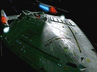
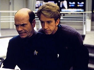
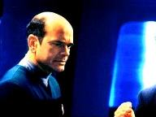
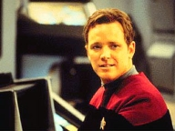
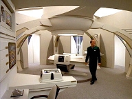
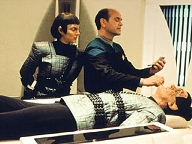
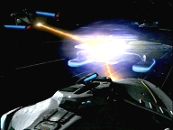

| MANCHETE
DO EPISDIO
Voyager
contata o Quadrante Alfa
Episdio
anterior | Prximo episdio Sinopse:
Data Estelar: 51462  Enquanto
usa os sensores avanados no novo laboratrio de astromtricas, Seven of Nine
detecta uma estao de comunicaes aliengena aparentemente abandonada e,
ao estabelecer interface, consegue localizar uma nave da Frota nos limites do Quadrante
Alfa. Janeway usa a tecnologia para mandar uma mensagem, mas a transmisso se
degrada antes de chegar ao destino. B'Elanna sugere que apenas uma corrente de
dados hologrfica resolver o problema. O Doutor recrutado, transportado
com sucesso atravs de milhares de anos-luz e vai parar na nave, agora
identificada como USS Prometheus.
Assim que chega, no entanto, o mdico descobre que a
tripulao da Frota est morta e, o controle, nas mos dos Romulanos. A
Prometheus um prottipo secreto com habilidades tticas avanadas e inteno
dos Romulanos test-las. Acionando o modo de ataque em multi-vetores, a nave se
separa em trs partes distintas que desabilitam com facilidade qualquer oponente.
O Doutor aciona seu contraparte na Enfermaria e os dois
concordam em trabalhar juntos para impedir os inimigos. Eles decidem usar o
sistema de ventilao para distribuir gs anestsico e deixar os invasores
inconscientes. Mas, para tanto,
preciso que o mdico da Voyager acesse os controles ambientais na Ponte. Ele
inventa uma histria sobre infeco viral para chegar ao painel, mas os
Romulanos desconfiam.
Enquanto isso, na Voyager, o link com a estao cortado pelos Hirogens, uma espcie que alega ser dona da
tecnologia. Janeway tenta usar de diplomacia para manter a comunicao, mas os
aliengenas parecem irredutveis. Diante da m vontade deles em permitir que a tripulao contate o
Quadrante Alfa, Seven envia um pulso de energia que os deixa desacordados.  Na
Prometheus, o Doutor interrogado pelos Romulanos, que pensam ter sido
infiltrados por espies da Frota. A sesso subitamente interrompida, quando
um gs entra pela ventilao e os incapacita. O segundo holograma explica que
simulou um risco ambiental e o computador abriu o sistema de ventilao
automaticamente. O desafio passa a ser controlar a nave, que est em rota
direta para o Imprio Romulano.
A Prometheus sofre
ataque de naves de guerra inimigas e os mdicos hologrficos no sabem
como oper-la. Em meio batalha, tambm atacada pela prpria Frota, que pensa haver
Romulanos no controle. Por fim, o segundo mdico acidentalmente inicia o modo
ttico e consegue destruir uma das naves de guerra, provocando a retirada dos
Romulanos. Oficiais da Frota vm a bordo. Depois de falar com o quartel-general
e explicar a situao, o Doutor transmitido novamente Voyager. Janeway e os
tripulantes so informados de que a Federao j sabe que eles esto perdidos e far o
que for possvel para traz-los de volta para casa. Comentrios:
 "Message in a Bottle"
um dos melhores segmentos de Voyager. A constatao no deixa de
ser irnica, j que o episdio rene tudo aquilo que os produtores mais
tentam afastar dos roteiros da srie: continuidade estabelecida em arcos mais
ou menos longos de histrias, fidelidade premissa e desenvolvimento de
personagens. Aqui - finalmente, depois de muito tempo -, o telespectador volta
a ter a sensao de que a USS Voyager est mesmo perdida e longe de
casa. Os pequenos detalhes que fazem o roteiro funcionar nesse sentido: os
rostos de incerteza e esperana, a ansiedade e expectativa, a fragilidade do
elo com o Quadrante Alfa. Tudo isso deixa o f na ponta da cadeira durante os
45 minutos e ansioso pelo que vai acontecer no final.
O melhor: o roteiro consegue equilibrar toda a densidade
emocional com uma carga incomum de humor ao designar como personagem central o
engraadssimo Doutor, reconhecidamente o personagem mais carismtico do
seriado, assessorado aqui por Andy Dick, ator renomado por seus trabalhos em
sries cmicas de sucesso. Uma boa sada para no tornar a histria
deprimente demais.
 Pela primeira vez, tambm, a tripulao tem uma
vitria real. Outros episdios, principalmente nos primeiros anos da srie,
trouxeram possibilidades bastante otimistas de um retorno imediato Terra.
Mas todos se frustraram, s vezes de maneira ridcula. Foram os casos de "Cold
Fire" e "False Profits",
da segunda e terceira temporadas, respectivamente. Claro, de forma alguma os
roteiristas podiam trazer a Voyager de volta naqueles momentos. Mas o
telespectador no apenas se sentiu trado, como passou a questionar a
competncia da tripulao. A partir da terceira temporada, parece que os
oficiais j se conformaram com a situao e procuram viver seu dia-a-dia
sem a obstinao de ir para casa. por isso, em parte, que "Message
in a Bottle" funciona. Aquele sentimento original vem tona e
inesperadamente.
Funciona tambm o vnculo que os roteiristas
estabelecem entre Voyager e Deep Space Nine. Pode ser
impresso, mas a trilha que tocou quando Seven disse se tratar de uma nave da
Frota soou muito como a do tema de abertura da srie co-irm. Depois, a
bordo da Prometheus, naturalmente, se v o novo uniforme-padro. Pequenos
tributos que agradam. O EMH2 cita os Dominion - naquele momento a maior
ameaa Federao - e, os Romulanos, a Tal Shiar. As cenas
de batalha - com as boas e "nem to velhas" - naves do Quadrante Alfa
so lindas. As Romulanas, em particular, despertam antigos sentimentos; quase
uma nostalgia.
S um parntese sobre isso: em Deep Space Nine, a Defiant
parece reinar absoluta, mas, aqui, fica claro que h vrias naves da mesma classe em
operao na Frota. A Prometheus, por outro lado, nunca mais apareceu.
A presena dos Hirogen no episdio, apesar de
rpida, foi bem marcante. Eles deixaram uma "boa" primeira
impresso. Fica mais ou menos claro que so uma ameaa. E no para menos. Eles
sero, ao lado dos Borgs, os maiores viles da srie. aguardar os
prximos episdios para constatar.
 Dignas de aplausos so as atuaes. claro, o
Doutor rouba a cena o tempo todo com seus dilogos, caretas e trejeitos. Divertida tambm
a preocupao - bastante
legtima - de Paris, quando chamado para assumir a Enfermaria enquanto o
mdico est fora. Infelizmente, McNeill teve seu papel ao longo da srie
relegado a esse tipo de funo, mas - di dizer - ele o faz bem. o
"palhao" da hora. Seven tambm manda ver. Suas atitudes
insolentes, o desapreo pela hierarquia e a falta de educao condizem com
seu perodo de ajuste vida na Voyager. Nem poderia ser diferente: a
ex-Borg sente-se superior aos humanos "desorganizados".
Agora, aos pontos negativos. Quem deixou a desejar foi Andy Dick.
Ele engraado por natureza, mas o ambiente de fico-cientfica
claramente lhe desconhecido. Suas falas
no fluem com naturalidade. Na Ponte, no momento da batalha, nem "se
sacude" direito. A atitude do Mark II tambm no
caiu bem. O holograma no demonstrou qualquer simpatia situao da
Voyager.
Pelo contrrio, foi sarcstico e procurou no tomar. conhecimento.
 A falta de pacincia de B'Elanna com Seven tambm no
cola muito. Isso j foi comentado em outros segmentos. Parece se tratar de puro preconceito. E de onde a engenheira-chefe
tirou a idia de que mandar um holograma resolveria o problema da
degradao da mensagem? Em que se baseou? No foi
satisfatria a explicao. Pareceu - como foi - s um pretexto para
alistar o Doutor. Depois, quando avisa que o programa dele ser baixado na
Enfermaria da Prometheus, como ela sabe que aquela nave tem um sistema de EMH?
Ela s pode ter deduzido que toda a Frota foi equipada depois do lanamento
da Voyager, mas nada foi dito que corroborasse tal pensamento. Quando o Doutor
enviado pela estao aliengena, nota-se um bug: ele se desmaterializa
com seu emissor mvel. O certo seria o aparelho cair no cho quando ele
desaparecesse.
Quanto aos Romulanos, foi sofrvel constatar o quanto
so incompetentes. Eram 27 deles na Prometheus, conseguiram eliminar a
tripulao da Frota e roubar a nave, mas no puderam com dois hologramas no
treinados? Para isso, h uma explicao fcil: sorte. Porque s assim
para explicar como o EMH2 conseguiu acionar o modo de ataque multi-vetorial e
acabar com as naves de guerra inimigas no momento exato em que precisava. Engraado? Sim. Verossmil? Nem um
pouco.
 Por fim, pareceu que a histria se estendeu demais e
suas repercusses foram jogadas para os ltimos segundos do episdio. O
telespectador fica querendo saber o que se discutiu (fora das telas) no Comando
da Frota, qual a reao dos almirantes, dos familiares. Nunca se saber. E
a resposta final de Janeway, embora emocionante, no fez jus ao que "Message
in a Bottle" significa para a tripulao e a prpria srie. Cad
as comemoraes? As lgrimas? Enfim, um clssico de Voyager que
entretm, mas que sofre de furos no roteiro.
Citaes:
Torres - "She may look human, and she
may sound human, but she's all Borg."
("Ela pode parecer humana, pode soar como humana, mas ela toda Borg.") Chakotay
- "What do you want me to do? Throw her in the brig for the rest of the
trip home?"
("O que quer que eu faa? Que eu a jogue na cela pelo resto da viagem para
casa?")
Torres - "I've heard worse ideas."
("J ouvi idias piores.") Doutor
- "When I requested more away missions, this isn't exactly what I had in
mind."
(Quando pedi mais misses avanadas, no era bem isso que tinha em mente.")
Janeway - "You may be our only chance to communicate with that ship."
("Voc pode ser a nossa nica chance de comunicar com aquela nave.") Doutor
2 - "Beady eyes, terrible bedside manner. I recognise you. But you're
not part of this database. What are you doing here?"
("Olhos tortos, modos terrveis. Eu reconheo voc. Mas no parte
deste banco de dados. O que est fazendo aqui?")
Doutor - "If you disengage your vocal subroutines for one second, I'd
explain. I was transmitted onto this ship by a Starfleet vessel over sixty
thousand light-years from here."
("Se desativar as suas sub-rotinas vocais por um segundo, vou explicar. Fui
transmitido para c por uma nave da Frota Estelar a mais de sessenta mil
anos-luz.")
Doutor 2 - "Sixty thousand light-years? We don't have ships
that far out."
("Sessenta mil anos-luz? No temos naves to longe assim.")
Doutor - "It's the Starship Voyager. We were taken into the Delta
Quadrant four years ago by an alien force."
(" a nave Voyager. Fomos levados para o Quadrante Delta h quatro anos
por uma fora aliengena.") Doutor
- "There are two ships at stake here, yours and mine! Now, I need to know
more about what's happening. Is the Federation at war with the Romulans?"
("H duas naves em jogo aqui, a sua e a minha! Agora, preciso saber mais
sobre o que est acontecendo. A Federao est em guerra com os Romulanos?")
Doutor 2 - "No. The Romulans haven't gotten involved in our fight with
the Dominion."
("No. Os Romulanos no se envolveram na nossa luta contra os Dominions.")
Doutor - "The who?"
("Os quem?")
Doutor 2 - "Long story."
("Longa histria.") Doutor - "I'm
as close to a sentient life-form as any hologram could hope to be. I socialise
with the crew, fraternise with aliens. I've even had sexual relations."
("Sou to prximo a uma forma de vida ciente quanto um holograma pode
ser. Eu socializo com a tripulao, fraternizo com aliengenas. At tive
relaes sexuais.")
Doutor 2
- "Sex? How's that possible? We're not equipped..."
("Sexo? Como isso possvel? No somos equipados...")
Doutor - "Let's just say I made an addition to my program."
("Digamos apenas que fiz uma adio ao meu programa.") Torres
- "You may have noticed that some of the crew seem a bit on edge when you're
around."
("Deve ter percebido que alguns na tripulao ficam meio ansiosos quando
est por perto.")
Seven - "I was Borg. I elicit apprehension."
("Eu fui Borg. Causo apreenso.")
Torres - "No, that's not what I mean. We're not afraid that you're going
to assimilate us. We're just not used to... you just... you're rude."
("No, no isso que quero dizer. No estamos com medo de que
nos assimile. Apenas no estamos acostumados... voc s... voc grossa.")
Seven - "I'm rude."
("Eu sou grossa.") Doutor - "Stop
breathing down my neck!"
("Pare de respirar no meu pescoo!")
Doutor 2
- "My breathing is merely a simulation."
("Minha respirao meramente uma simulao.")
Doutor - "So is my neck. Stop it anyway!"
("Meu pescoo tambm. Pare do mesmo jeito!") Torres
- "You killed him?"
("Voc o matou?")
Seven - "It was a mild shock. He will recover."
("Foi um choque leve. Ele se recuperar.")
Janeway - "And when he does?"
("E quando ele se recuperar?")
Seven - "He wasn't responding to diplomacy."
("Ele no estava respondendo diplomacia.") Chakotay
- "You got through to Starfleet?"
("Voc contatou a Frota Estelar?")
Doutor - "I spoke directly with headquarters. Apparently, Voyager was
declared officially lost fourteen months ago. I set the record straight. I
told them everything that's happened to this crew. They said they would
contact your families to tell them the news and promised that they won't stop
until they've found a way to get Voyager back home. And they asked me to relay
a message. They wanted you to know you're no longer alone."
("Falei diretamente com o quartel-general. Aparentemente, a Voyager foi
declarada oficialmente perdida h quatorze meses. Eu corrigi os registros.
Contei a eles tudo o que aconteceu com esta tripulao. Eles disseram que
vo contatar as suas famlias para contar as notcias e prometeram que no
vo parar at que encontrem um meio de levar a Voyager para casa. E me
pediram para transmitir uma mensagem. Eles querem que saibam que no esto
mais sozinhos.")
Janeway - "Sixty thousand light years... seems a little closer today."
("Sessenta mil anos-luz... parecem um pouco menos hoje.") Trivia:
 Neste episdio, a Voyager est nas coordenadas 18.205.47, a 60.000 anos-luz
do Quadrante Alfa.
Neste episdio, a Voyager est nas coordenadas 18.205.47, a 60.000 anos-luz
do Quadrante Alfa.
Segundo o protocolo 28 de segurana da Frota, subseo D, no evento de
invaso aliengena hostil o holograma mdico deve se desativar e aguardar
socorro.
A
Federao est em guerra com os Dominions, conforme foi estabelecido em Deep
Space Nine, mas os Romulanos ainda no entraram no conflito.
A
Frota Estelar havia concludo h quatorze meses que a Voyager estava
oficialmente perdida.
Torres
est usando um novo jaleco de trabalho para esconder a gravidez da atriz
Roxann Dawson.
Os Hirogens so introuzidos brevemente no episdio e se tornaro a grande
ameaa da tripulao nos prximos segmentos.
O EMH-2 diz que os Romulanos no se envolveram no conflito entre a Federao
e os Dominion. "Message in a Bottle" foi exibido cerca de trs
meses antes de "In The Pale Moonlight", segmento de Deep
Space Nine em que a raa se alia Federao e aos Klingons na guerra.
"Message in a Bottle" marca o primeiro contato estabelecido
entre a Voyager e a Federao.
O nmero de registro da Prometheus (NX-59650)
mais baixo que o da Voyager (NCC-74656). Isso descredita a teoria de que as naves mais
novas recebem nmeros maiores.
Judson Scott j participou de outras
produes da franquia. Fez Joachim, em "Jornada nas Estrelas - A Ira
de Khan", e Sobi, no episdio "Symbiosis", da
primeira temporada de A Nova Gerao.
Tiny Ron tambm fez diversas aparies em Deep Space Nine. Esteve em "Prophet
Motive", "Ferengi Love Songs", "Profit and
Lace", "The Emperor's New Cloak" e "Dogs of
War". Ficha
tcnica: Direo de
Nancy Malone
Escrito por Rick Williams
Exibido em 21/01/1998
Produo: 082 Elenco: Kate
Mulgrew como Kathryn Janeway
Robert Beltran como
Chakotay
Roxann Biggs-Dawson como B'Elanna Torres
Robert
Duncan McNeill como Tom Paris
Ethan Phillips como
Neelix
Robert Picardo como Doutor
Tim Russ
como Tuvok
Jeri Ryan como Seven of Nine
Garrett Wang como Harry Kim Elenco
convidado:
Andy Dick como EMH-2
Judson Scott como Rekar
Valerie Wildman como Nevala
Tiny Ron como Idrin
Tony Sears como oficial da Frota
Episdio
anterior | Prximo episdio
|